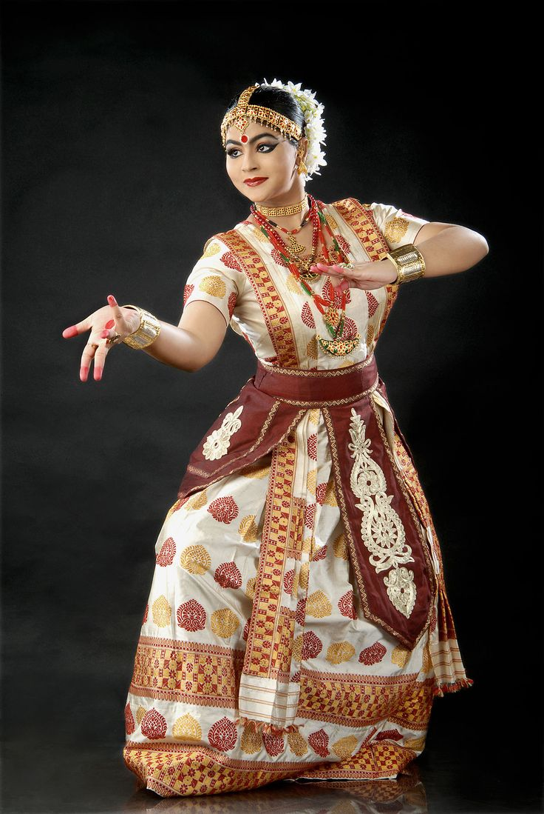

Sattriya is one of the major Indian classical dances from Assam. Although it is a living dance tradition which has been thriving for almost six hundred years through the Sattra institutions (Vaishnava monasteries) of Assam, it gained mainstream visibility only in the recent decade after Sattriya was recognized as a classical dance by the Sangeet Natak Akademi in 2000. This recognition encouraged and facilitated further experimentation, research and performance in the field of Sattriya dance.
Sattriya Dance has its origin in the ‘Sattras’ established by Mahapurush Srimanta Sankardev in the 15th and the 16th century. The Sattras were established for the propagation of Vaishnavism and later they became the religious, cultural and social hub for the people of Assam. The great Vaishnavite Saint has developed this dance form with its basic roots aligned with the characteristics of other forms of Indian classical dance. Initially a part of the ‘Ankia Naats’, this dance form derived its name from the word ‘Sattra’ .This dance form was originally performed in the Sattras and the Namghars by the male Bhokots as a part of religious rituals and for spreading the philosophy of Vaishnavism and was confined within the four walls of the sattras for several centuries.Later eminent personalities and reformers like Late Moniram Dutta Muktiyar Barbayan, Late Roseshwar Saikia Barbayan, Late Dr. Maheswar Neog , Late Dr Bhupen Hazarika, Late Ananda Mohan Bhagawati to name of few contributed in developing and bringing the Sattriya dance to the outer world. A revolutionary change took place, when female dancers started performing this art form, which was earlier prohibited. Finally in 15th November 2000 , the Sangeet Natak Akademi declared Sattriya Dance as a classical dance form of India.
The costumes of Ankiya Naats (dramas) are colourful and character specific. Use of Mukha (Masks) to depicts demons and special characters are also unique to this dance form. The art of mask making is an integral part of Sattriya culture and originated in the Sattras of Assam. Beautifully decorated turbans and crowns made by the local artisans are used in the Ankiya Naats.Sattriya is one of the classical dance forms of India, originating from the northeastern state of Assam. It was introduced in the 15th century by the saint and reformer Srimanta Sankardev as a powerful medium for spreading the teachings of Vaishnavism. Traditionally performed by male monks in monasteries called *Sattras*, Sattriya combines dance, drama, and music to depict stories from Hindu epics, especially the life of Lord Krishna. Over time, it has evolved into a respected art form performed on stage by both men and women.This dance form was originally performed in the Sattras and the Namghars by the male Bhokots as a part of religious rituals and for spreading the philosophy of Vaishnavism and was confined within the four walls of the sattras for several centuries.
|  | Sattriya Dance Form |